TECHVESTVENTURES DAILY RISK ALERTS — Emergent News Digest — Nov 28, 2026, 12:00 PM EST ALL RISK REPORTS click TVV Risk Center
TVV RESEARCH DIGEST — November 28, 2026 — 13 desks
Prioritized Risk Summary November 28, 2026
| Sections Ranked for Importance Today | |
|---|---|
| GEOPOLITICS | Taiwan's DPP doubles its local wins as KMT holds Taipei; Iran claims a US carrier strike |
| TECHNOLOGY | Congress readies hearings on Huang's return; Taiwan chip stocks face the vote Monday |
| HEALTH | Congo's Ebola passes 12,100 cases and is growing exponentially, UN agencies say |
| DERIVATIVES | Fear gauge still extreme at 25; CoreWeave bankruptcy odds rise to 21% |
| TERROR | India foils a Jaish plot on an air base; US Air Force cloud platform hacked |
| INFRASTRUCT | Taiwan votes to end its nuclear-free policy as AI chips drive power demand |
| PREDICTIONS | Bettors price December hikes by the Fed, ECB, India and now Canada at 83% to 98% |
| ECONOMY | Bettors see about 98,000 November jobs before Friday's report; India banks short of cash |
| STOCKS | S&P 500 gains 5.6% in Thanksgiving week, its best since April 2025; Nvidia up 19.9% |
| AI BOOST | AI math breakthrough rumors stir encryption fears; outages expose interlocked systems |
| COMMODITY | Gold up 3.5% and silver 5.2% on the week; OPEC+ meets Nov 29 as Brent nears $95 |
| SPACE | C-class flares resume after a 171-hour lull; cycle 25 runs below the historical median |
| QUAKES | No damaging M6+ quake; a deep M6.7 off Kamchatka caused no reported harm |
1. Major Geopolitical Conflict Developments
- ★ Taiwan's vote splits the map: preliminary Central Election Commission counts give the China-friendlier KMT 11 of 22 mayor and magistrate races, the ruling DPP 10 (up from 5 in 2022) and an independent 1. KMT mayor Chiang Wan-an held Taipei 53.7% to 45.7% over Beijing-sanctioned Puma Shen, who conceded, and the KMT kept New Taipei, but the DPP flipped six races including Taichung after eight years of KMT rule (Reuters, Focus Taiwan, South China Morning Post, Financial Times). Yunlin was decided by 173 votes, inside the recount threshold, and Hualien's runner-up says he will seek a recount; winners are formally announced Dec 4 (see graph). Reuters · Focus Taiwan · South China Morning Post · Financial Times · Focus Taiwan
- ★ What the betting got wrong in Taiwan: at polls opening, Polymarket gave the eventual winner under 50% in 5 of 21 markets, including Taichung (25%) and Yunlin (17.5%); its Brier score of 0.170 sits between perfect (0) and a coin flip (0.25). Near term, the KMT's narrow 11-10 edge and its Taichung loss weaken its base for the 2028 presidential race (South China Morning Post), while Beijing's response to a stronger DPP is the risk to watch (see graph). Polymarket · South China Morning Post · DW
- ★ Iran claims a carrier strike, the US calls it lies: Iran's navy chief claimed a strike on the carrier USS Abraham Lincoln, tanker seizures and Hormuz transit tolls; US Central Command rejected all three, and a US statement called the Hormuz claims "fabricated lies" (CNBC, Arab News, The New Region). These are conflicting wartime claims with no independent confirmation of an attack. Separately, Iran's envoy in Moscow was quoted saying the strait will be open but with transit fees (EnergyNow), which shipping bodies reject (Splash247). CNBC · Arab News · The New Region · EnergyNow · Splash247
- ★ Blockade turns kinetic: US forces disabled the Palau-flagged bulk carrier Pacific Archer in the Gulf of Oman as it tried to breach the blockade of Iranian ports, US Central Command said (CENTCOM, Marine Insight, DW). Iran pointed to Europe's role in the war after the two Italians were killed in Kuwait (Al Jazeera), and EA WorldView counts the US war on Iran at day 275. US Central Command · Marine Insight · DW · Al Jazeera · EA WorldView
- ★ Ukraine's deep strikes widen: the Kyiv Independent reports a massive Ukrainian attack on Moscow Oblast with about 460 drones, the New York Times says Ukraine's deep strikes are growing in scale and scope, and the WSJ reports Ukraine used an Israeli Starlink alternative to hit the Crimean Bridge (UNITED24). A Ukrainian strike on a bus in Russian-occupied Luhansk killed nine (DW), both sides are stepping up strikes on bridges (Arab News), and Zelensky says Russia is preparing a new mass strike in the coming days (Reuters). The Kyiv Independent · The New York Times · UNITED24 Media · DW · Arab News · Reuters
- ★ North Korea moves: Seoul is watching for signs that Kim Jong Un may visit China (Japan Times, Anadolu), Russia and North Korea signed a protocol on developing ties (A News), and Kim vowed to build more nuclear weapons after ignoring President Trump's overture (PBS). Kyiv claims North Korea halted military aid to Russia over a row with Seoul (Euronews); that claim conflicts with the new Russia protocol and is unconfirmed. The Japan Times · A News · PBS · Euronews
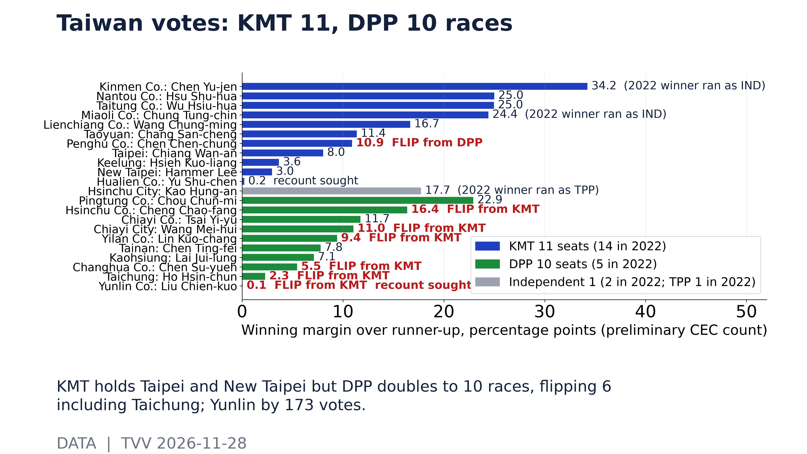
Taiwan votes: KMT 11, DPP 10 races. KMT holds Taipei and New Taipei but DPP doubles to 10 races, flipping 6 including Taichung; Yunlin by 173 votes. [Data; data as of 2026-11-28 23:22 Taipei (10:22 AM ET), preliminary] Source: election2026.rti.org.tw data page
2. Major Terror / Security Incidents
- ★ India foils an air base plot: Gujarat's anti-terror squad arrested a Jaish-e-Mohammed operative with an AK-47 who planned to target an Indian Air Force station (NDTV, Rediff); police say he learned bomb-making on Instagram (The Avenue Mail). Al Jazeera reports that India declared its "last local militant" in Kashmir dead, but the rebels are adapting. NDTV · Rediff · The Avenue Mail · Al Jazeera
- ★ Middle East and Europe: Jordan's parliament is debating tougher terror sentences after a deadly church attack (Premier Christian News), a civilian was killed in a terror attack in Syria's al-Bab (Yeni Safak), and German police arrested three teenagers in a neo-Nazi terrorism investigation (Searchlight). Algemeiner reports that Iran-linked arrests are mounting across Europe, with Jewish targets at growing risk. Premier Christian News · Yeni Safak · Searchlight Magazine · Algemeiner
- ★ Cyber hits on defense and cloud: a US Air Force cloud computing platform was hacked in the latest cyberattack on federal assets (NBC News, WRAL). Password manager pCloud confirmed a cyberattack that exposed user email addresses (Beinsure), a ransomware attack crippled a Chinese manufacturer after its backups failed (SC Media), and a Florida county is suing Change Healthcare over its ransomware attack (Bloomberg Law). Ransomware leak sites list 4,710 victims so far in 2026, up 11% on last year, with Germany at 221 (+9%) and Switzerland at 44 (see graph). NBC News · WRAL · Beinsure · SC Media · Bloomberg Law · ransomware.live
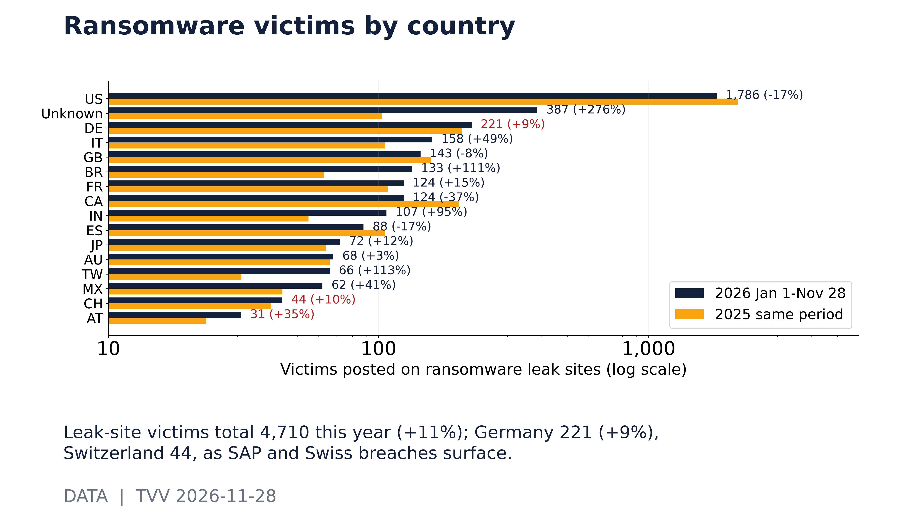
Ransomware victims by country. Leak-site victims total 4,710 this year (+11%); Germany 221 (+9%), Switzerland 44, as SAP and Swiss breaches surface. [Data; data as of 2026-11-28 09:44 ET] Source: ransomware.live data page
3. Earthquakes and Eruptions
- ★ No new damaging M6+ quake: a deep M6.7 struck 62 km NNW of Yelizovo off Russia's Kamchatka Peninsula at 13:15 UTC Saturday, at 188 km depth, with no reported damage and no tsunami threat to the Philippines (USGS, Times of India). It is the sixth M6+ off Kamchatka this year, after 30 in 2025's M8.8 sequence, against a 1950-2024 average of 3.8 a year (see graph). USGS · The Times of India
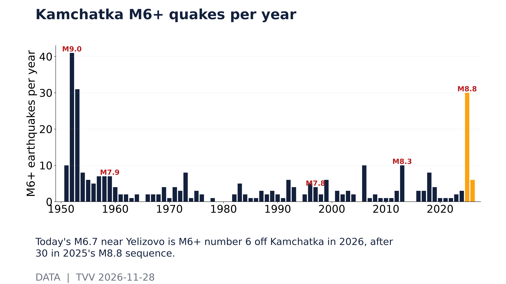
Kamchatka M6+ quakes per year. Today's M6.7 near Yelizovo is M6+ number 6 off Kamchatka in 2026, after 30 in 2025's M8.8 sequence. [Data; data as of 2026-11-28 13:15 UTC] Source: earthquake.usgs.gov data page
4. Solar / Space Weather
- ★ Flare lull ends, cycle 25 runs below average: C-class flares resumed after a 171-hour lull (Tech Times), with GOES recording a C3.9 peak on Nov 27; no M-class flares. Seven years into cycle 25, its sunspot number of about 76 ranks 19th of 25 cycles at the same age, against a historical median of 95 (SILSO, see graph). Twin coronal holes faced Earth this week (SpaceWeatherLive). Long-horizon warnings on pole drift and geomagnetic excursion stay on watch; no one can predict the timing of a sudden shift, and Michael Hentschel's own view is 2035 at the earliest, with critical earth changes along the way. Tech Times · SILSO · NOAA SWPC · SpaceWeatherLive
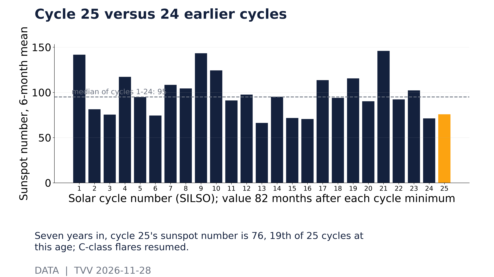
Cycle 25 versus 24 earlier cycles. Seven years in, cycle 25's sunspot number is 76, 19th of 25 cycles at this age; C-class flares resumed. [Data; data as of 2026-10 monthly SSN; flares to 2026-11-28 06:32 UTC] Source: swpc.noaa.gov data page
5. Critical Infrastructure / Transportation Disruptions
- ★ Taiwan votes to end its nuclear-free policy: Referendum No. 22 passed with 7,427,955 yes votes to 4,554,010 no in preliminary counts, 37% of eligible voters, clearing the 25% threshold that sank the August 2025 vote (Taipei Times, Focus Taiwan, Bloomberg). Taiwan's last reactor shut in May 2025; passage restarts nothing on its own, but Taipower applied in March to restart Maanshan as AI chip production drives power demand (Al Jazeera, see graph). Taipei Times · Focus Taiwan · Bloomberg · Al Jazeera
- ★ Storm outages linger: more than 36,000 Ameren Missouri customers were still without power Saturday morning after the Thanksgiving winter storm (KSDK), and PECO says widespread Philadelphia-area outages could be restored by Sunday (6abc). In South Africa, a substation fault cut power to the domestic departures terminal at Johannesburg's O.R. Tambo airport before it was restored (Avi-Go). ABC News reports Cuba's grid collapse is growing more dire. KSDK · 6abc · Avi-Go · ABC News
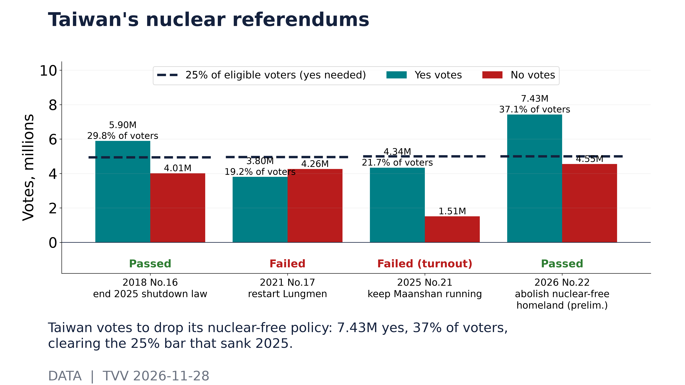
Taiwan's nuclear referendums. Taiwan votes to drop its nuclear-free policy: 7.43M yes, 37% of voters, clearing the 25% bar that sank 2025. [Data; data as of 2026-11-28 22:49 Taipei (preliminary); earlier votes CEC final] Source: taiwannews.com.tw data page
6. Econo-Metrics
- ★ Jobs week ahead: the November jobs report lands Friday Dec 4, the key test before the Fed's Dec 8-9 meeting (WSJ, Reuters). Polymarket bins imply about 98,000 November jobs, median bin 75,000 to 100,000, after October's +165,000 and a 12-month average of 74,000; bettors give 38% to a 4.1% jobless rate (see graph). Separately, the WSJ reports announced US job cuts are down 41% so far this year. WSJ · Reuters · Polymarket · Polymarket · WSJ
- ★ Consumers spend through inflation: Adobe Analytics counts $13.1 billion of US Black Friday online spending as shoppers look past inflation and elevated gas prices (Reuters, Yahoo Finance). NBC News's calculator tallies what higher gas prices have cost households since the war began, and euro-zone consumers sharply raised their inflation expectations in the ECB's survey (Reuters). Reuters · Yahoo Finance · NBC News · Reuters
- ★ India's cash squeeze: the Reserve Bank of India eased its daily cash-reserve rule to 90% from Dec 1 as banks run short of cash, reversing October's tightening (TradingView, The New Indian Express), while Nomura now expects a 50 basis-point RBI hike on Dec 4 after food prices surged (Bloomberg). Canada's GDP and jobs data this week test the case for a Bank of Canada hike (RBC). TradingView · The New Indian Express · Bloomberg · RBC
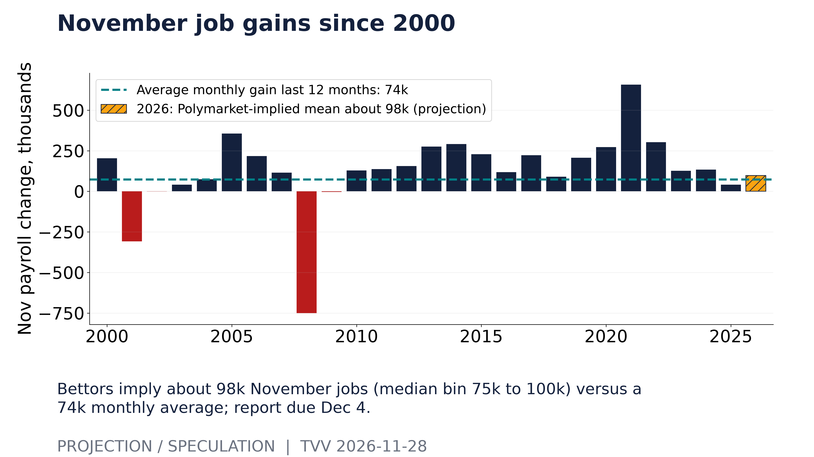
November job gains since 2000. Bettors imply about 98k November jobs (median bin 75k to 100k) versus a 74k monthly average; report due Dec 4. [Projection/Speculation; data as of BLS through Oct 2026; odds 2026-11-28 10:37 ET] Source: fred.stlouisfed.org data page
7. Epidemic / Bio-Metrics
- ★ Ebola keeps climbing: Congo's outbreak reached 12,176 cases and 5,978 deaths by Nov 26 (sitrep 196), a 49% fatality rate, and UN agencies say it is growing exponentially (DW). WHO issued updated response recommendations calling for better security and faster research, Canada extended its temporary border measures, and Uganda began Africa's first mRNA Ebola vaccine trial (WHO, Canada.ca, Al Jazeera). Near term, the recent trend of about 469 new cases a week points to about 482 a week by Dec 31 (projection, see graph). DW · WHO · Canada.ca · Al Jazeera · Al Jazeera
- ★ Measles loses ground across the Americas: the US, Mexico and Bolivia have lost measles elimination status even as global measles deaths hit a historic low (UN News). Wisconsin reports three measles deaths as Minnesota cases rise (MPR News), Ohio's outbreak accelerated with one week's total nearly matching all of last year (WKRC), and California has confirmed 60 cases this year, more than the previous two years combined (Santa Barbara Independent). UN News · MPR News · WKRC · The Santa Barbara Independent
- ★ Bird flu and COVID: bird flu was confirmed in an Oklahoma dairy herd (Sequoyah County Times) and continues in Oregon and Washington backyard flocks (Rogue Valley Times), while Europe's poultry sector reports a slow season (eKathimerini). A COVID outbreak at Maryland's maximum-security psychiatric hospital more than doubled in a week to 50 cases (Medical Daily). Sequoyah County Times · Rogue Valley Times · eKathimerini · Medical Daily
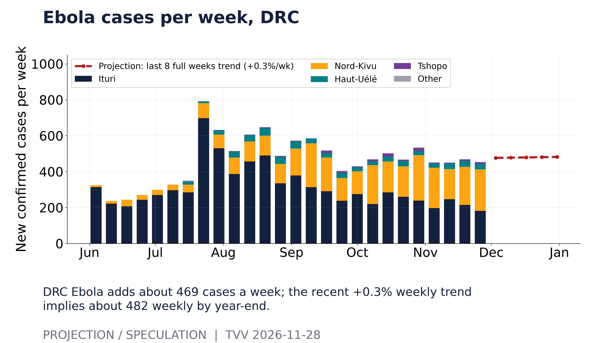
Ebola cases per week, DRC. DRC Ebola adds about 469 cases a week; the recent +0.3% weekly trend implies about 482 weekly by year-end. [Projection/Speculation; data as of 2026-11-26 (sitrep 196)] Source: ebola-tracker.org data page
8. Gold and Silver and Commodities
- ★ Gold and silver end the week higher: COMEX gold closed at $3,639.6 on the Nov 27 half day, up 2.9% from Wednesday and 3.5% on the week, and silver rose 5.2% on the week to $43.17 (Yahoo Finance, USA Today). Gold is still down 16.2% this year in dollars, 20.3% in yuan and 10.2% in euros (see graph). J.P. Morgan's Gregory Shearer Tang sees $4,600 by the fourth quarter of 2027 as rates fall (Kitco). Near term, Polymarket bettors give 59.5% to a dip to $3,500 by Dec 31, down from 83% a week ago (see graph). Yahoo Finance · USA Today · Kitco · Polymarket
- ★ Oil and OPEC+: Brent rose 3.1% on the week to $95.44 while WTI slipped 1.1% to $83.08 (Yahoo Finance). OPEC+ meets Nov 29 and is expected to hold first-quarter 2027 output steady amid disputes (Al-Monitor, Admirals), Iraq is pushing for a higher quota (OilPrice), and Reuters reports the US pushed Venezuela and Iraq to consider leaving OPEC. CNBC says the Iran war could shatter expectations of a coming oil surplus, and the IEA's outlook now has global supply and demand both contracting in 2026 (EnergyNow). Yahoo Finance · Al-Monitor · Admirals · OilPrice · Reuters · CNBC · EnergyNow
- ★ Copper and gas: copper jumped the most since January as short sellers retreated (Mining.com), though the WSJ notes physical supply stays tight, and Codelco's output fell as an accounting scandal and write-downs deepen its crisis (Latin Times). US natural gas fell on warm weather forecasts (Barchart), and Waha hub prices turned positive for the first time since February as Permian pipeline constraints ease (EnergyNow). Mining.com · WSJ · Latin Times · Barchart · EnergyNow
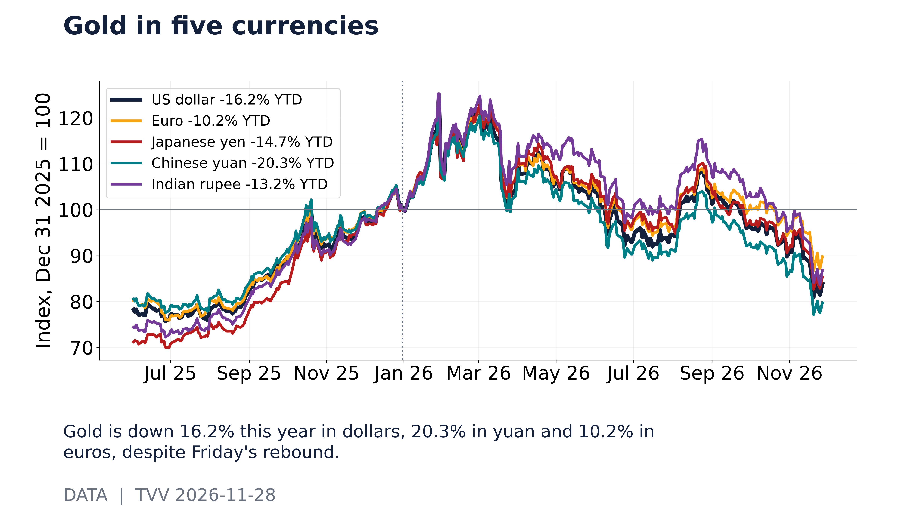
Gold in five currencies. Gold is down 16.2% this year in dollars, 20.3% in yuan and 10.2% in euros, despite Friday's rebound. [Data; data as of 2026-11-27 close (Nov 27 half day)] Source: finance.yahoo.com data page
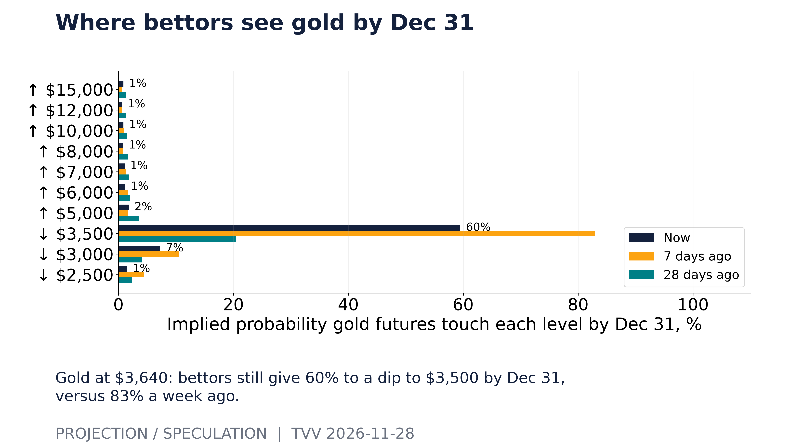
Where bettors see gold by Dec 31. Gold at $3,640: bettors still give 60% to a dip to $3,500 by Dec 31, versus 83% a week ago. [Projection/Speculation; data as of 2026-11-28 10:37 ET] Source: polymarket.com data page
9. Stock Averages and Nasdaq Major Movers
- ★ Best week since April 2025: in Thanksgiving week the S&P 500 rose 5.6% to 7,297.49, its second-best Thanksgiving week since 2000 (see graph), the Nasdaq Composite gained 6.7% to 24,129.50, the Dow 5.5% to 50,774.94 and the Russell 2000 ETF (IWM) 6.7%. The VIX fell from 35.89 to 23.81 (Yahoo Finance). The Dow added 592 points in Friday's half day (Kiplinger), and a Black Friday rally lifted 64 of 65 AI stocks (Trending Topics). Yahoo Finance · Kiplinger · RealMoney · Trending Topics
- ★ Weekly leaders and laggards: Nvidia led with a 19.9% gain to $150.49 after Jensen Huang's reinstatement, though it is still about 38% below its peak (Globe and Mail); Tesla rose 15.7% to $400.00, CoreWeave 11.7% to $44.15 and SAP 7.4% to $213.65 (Yahoo Finance). Laggards: Bitcoin fell about 3% on the week to near $59,300 as CoinMarketCap's crypto fear gauge sank to 10, and Trump-linked World Liberty's WLFI token fell 39% (TradingView, The Defiant). WTI slipped 1.1%. Reuters says the volatile market now faces jobs data and the rate outlook. Yahoo Finance · The Globe and Mail · Yahoo Finance · TradingView · The Defiant · Reuters
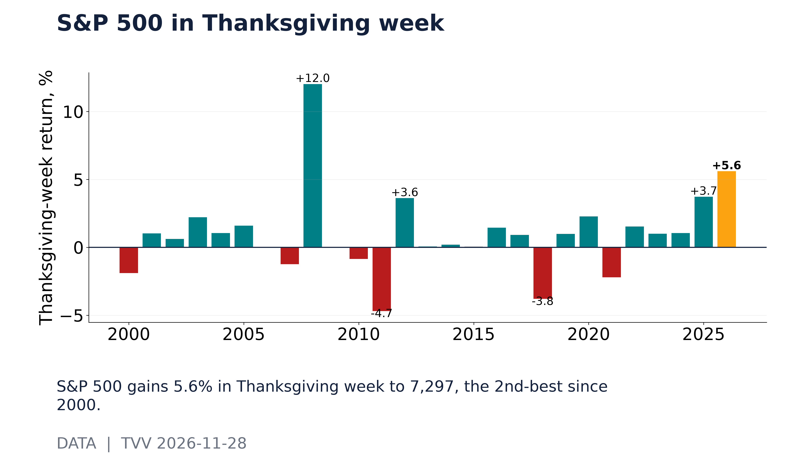
S&P 500 in Thanksgiving week. S&P 500 gains 5.6% in Thanksgiving week to 7,297, the 2nd-best since 2000. [Data; data as of 2026-11-27 close (1 PM ET half day)] Source: finance.yahoo.com data page
10. Polymarket and Kalshi Sentiment Highlights
- ★ A global tightening wave is priced in: Polymarket bettors give 96.2% to a Fed hike on Dec 9 (90.7% a week ago), 98.2% to an ECB hike on Dec 17, 96.5% to an RBI hike on Dec 4 and 83.0% to a Bank of Canada hike on Dec 9, up from 48.6% a week ago (see graph). Investing.com says December is priced in but January remains uncertain, and ECB's Boris Vujcic says markets are likely right to bet on a hike (MLQ.ai). Near term, the jump in Canada odds shows the hike wave spreading beyond the Fed. Polymarket · Polymarket · Investing.com · MLQ.ai
- ★ Prediction markets in court and on the record: New Jersey is taking its legal fight over prediction markets to the US Supreme Court (ABC News). On Taiwan, Polymarket's polls-opening odds called the KMT's most-races win (79.5%) but gave the DPP's eventual 10 races only 21% (see graph). Separately, Yahoo Finance reports CoreWeave bankruptcy odds rose to 21% on prediction markets as it eyes a $4.5 billion loan. ABC News · Polymarket · Polymarket · Yahoo Finance
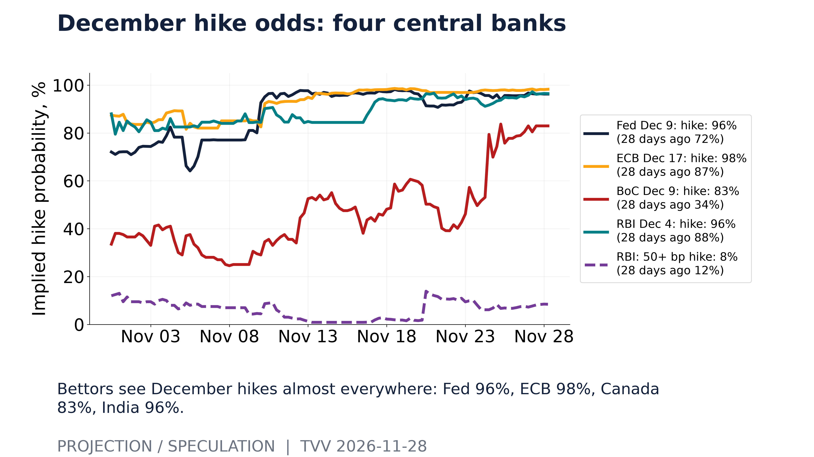
December hike odds: four central banks. Bettors see December hikes almost everywhere: Fed 96%, ECB 98%, Canada 83%, India 96%. [Projection/Speculation; data as of 2026-11-28 10:37 ET] Source: polymarket.com data page
11. Tech-Metrics
- ★ Huang's return draws fire in Congress: lawmakers are moving forward with hearings and there is fury in Congress over Jensen Huang's reinstatement (WHEC), Huang and Nvidia's general counsel face House questioning over China concerns (Scripps News), and the New York Post says the grilling will cover his affairs and China chip sales. President Trump says he talked Nvidia's board into reinstating Huang (Fortune), faces GOP backlash (Al Jazeera), and plans to visit a groundbreaking for a semiconductor manufacturer that supplies Nvidia (The Hill). WHEC · Scripps News · New York Post · Fortune · Al Jazeera · The Hill
- ★ Taiwan's chip market reopens Monday: the Taiex last closed at 39,308 and the iShares MSCI Taiwan ETF rose to $86.69 in Friday's US half day. After past local elections the Taiex has moved between -1.5% (2022) and +1.9% (2005) in the next session, with TSMC between -3.5% and +2.3% (see graph). Near term, Monday's session is the first market verdict on a DPP that gained ground but lost Taipei. Yahoo Finance · Yahoo Finance · Bloomberg
- ★ OpenAI versus Apple: OpenAI countersued Apple, accusing it of stealing trade secrets and of "coercing and threatening" suppliers, as both companies accuse each other of theft (Reuters, CNN, 24/7 Wall St.). Tesla's EU assisted-driving vote is set for Dec 15 (Reuters); the Dutch regulator RDW reports zero incidents across 24 million km of Tesla assisted-driving data (shattered.io). Reuters · CNN · 24/7 Wall St. · Reuters · shattered.io
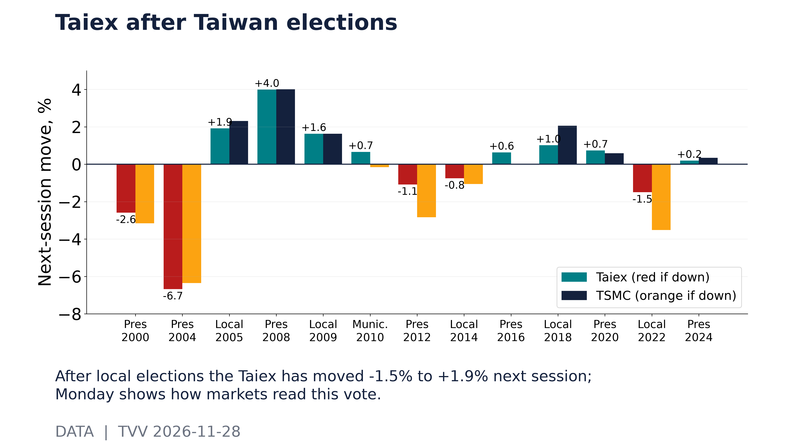
Taiex after Taiwan elections. After local elections the Taiex has moved -1.5% to +1.9% next session; Monday shows how markets read this vote. [Data; data as of Closes to 2026-11-27 (Taiex 39,308)] Source: finance.yahoo.com data page
12. AI Hypergrowth Risks
- ★ AI math breakthroughs stir encryption fears: Axios reports rumors that AI models have already cracked math results too dangerous to publish, the Guardian asks whether AI could break encryption, and Ynetnews says AI breakthroughs raise fears over global digital security. Mathematicians urge caution over an AI-assisted result on a 167-year-old problem (Bastille Post). These are reports and speculation, not confirmed results. Axios · The Guardian · Ynetnews · Bastille Post
- ★ Outages pile up as systems interlock: Allstate's outage entered a third day, leaving customers locked out (Gizmodo, The Independent), Lloyds resolved an app and online-banking outage (CX Today), and Moomoo examines the hidden dependencies behind AI exposed by the Microsoft outage. Microsoft's president warns of ongoing outages from AI security threats (SC Media), while the Register and columnist Michael Hiltzik argue the cause is poor maintenance, not AI or hackers. Gizmodo · The Independent · CX Today · Moomoo · SC Media · The Register
- ★ AI and jobs, AI and safeguards: US jobs in data processing and hosting (NAICS 518) fell to 454,800 in October from 483,000 when ChatGPT launched, down 6%, and computer systems design jobs are down 5%, while total payrolls rose 3% (BLS, see graph); the last two years extended in a straight line point lower through 2027 (projection). Cisco and OpenAI launched a project to safeguard agentic AI (WSJ), and Fortune examines Anthropic's culture clash after its IPO. BLS · WSJ · Fortune
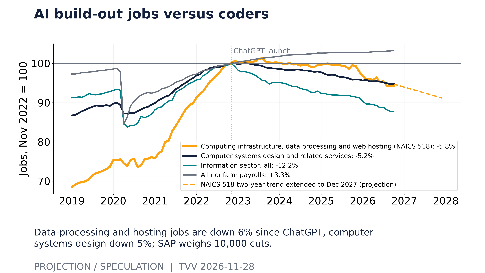
AI build-out jobs versus coders. Data-processing and hosting jobs are down 6% since ChatGPT, computer systems design down 5%; SAP weighs 10,000 cuts. [Projection/Speculation; data as of Oct 2026 (BLS Employment Situation)] Source: fred.stlouisfed.org data page
13. Finance Bubble Derivatives Risk
- ★ Fear eases but stays extreme: CNN's Fear and Greed index rose to 25 at Friday's close from 16, still in extreme fear, with put-call options, junk-bond demand and safe-haven demand all at 19 and S&P 500 momentum at 8 (CNN, see graph). South Korea's selloff pushed margin debt down to about $18.8 billion, with sidecar circuit breakers triggered four times as retail investors cut leverage (BigGo Finance). CNN · BigGo Finance
- ★ AI credit strain: CoreWeave is eyeing a $4.5 billion Meta-linked loan as prediction-market bankruptcy odds rise to 21% (Yahoo Finance), and Seeking Alpha rates it non-investable. OpenAI's 457 MW TensorWave deal could be worth up to $9.1 billion (Yahoo Finance), Asia Times says Southeast Asia's AI data-center bets are turning into stranded assets, and T. Rowe Price set out a framework for evaluating data-center bonds. Michael Burry sold his Nasdaq-100 puts and turned net long, saying he would short Nvidia again if it hits $200 (Businesskorea, BigGo Finance). Yahoo Finance · Seeking Alpha · Yahoo Finance · Asia Times · T. Rowe Price · Businesskorea · BigGo Finance
- ★ Private credit looks for new exits: private-equity firms are turning to the Nordic bond market for debt (WSJ), the Financial Times questions private credit's "alpha", and an analysis in the Globe and Mail asks whether Wall Street's two biggest bubbles are bursting at once. WSJ · Financial Times · The Globe and Mail
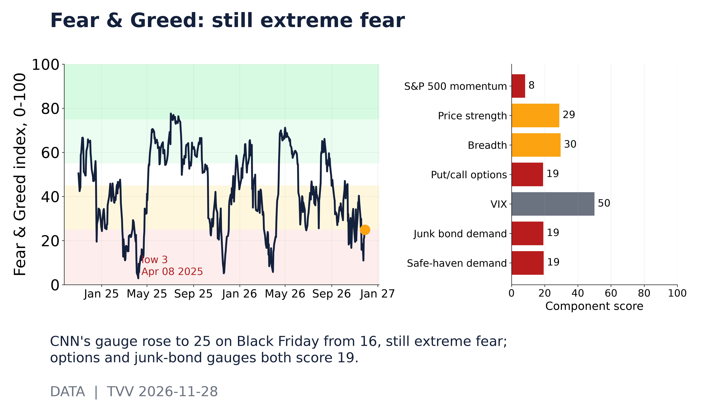
Fear & Greed: still extreme fear. CNN's gauge rose to 25 on Black Friday from 16, still extreme fear; options and junk-bond gauges both score 19. [Data; data as of 2026-11-27 close] Source: cnn.com data page
Prioritized Risk Summary November 28, 2026
| Sections Ranked for Importance Today | |
|---|---|
| GEOPOLITICS | Taiwan's DPP doubles its local wins as KMT holds Taipei; Iran claims a US carrier strike |
| TECHNOLOGY | Congress readies hearings on Huang's return; Taiwan chip stocks face the vote Monday |
| HEALTH | Congo's Ebola passes 12,100 cases and is growing exponentially, UN agencies say |
| DERIVATIVES | Fear gauge still extreme at 25; CoreWeave bankruptcy odds rise to 21% |
| TERROR | India foils a Jaish plot on an air base; US Air Force cloud platform hacked |
| INFRASTRUCT | Taiwan votes to end its nuclear-free policy as AI chips drive power demand |
| PREDICTIONS | Bettors price December hikes by the Fed, ECB, India and now Canada at 83% to 98% |
| ECONOMY | Bettors see about 98,000 November jobs before Friday's report; India banks short of cash |
| STOCKS | S&P 500 gains 5.6% in Thanksgiving week, its best since April 2025; Nvidia up 19.9% |
| AI BOOST | AI math breakthrough rumors stir encryption fears; outages expose interlocked systems |
| COMMODITY | Gold up 3.5% and silver 5.2% on the week; OPEC+ meets Nov 29 as Brent nears $95 |
| SPACE | C-class flares resume after a 171-hour lull; cycle 25 runs below the historical median |
| QUAKES | No damaging M6+ quake; a deep M6.7 off Kamchatka caused no reported harm |
TECHVESTVENTURES ACTION-ALERT — November 28, 2026 see all graphs click TVV Risk Center
EDITOR — Michael Hentschel
Most news events require or spawn no action or reaction, some (but not many) are or become warnings. We draw attention to substantial lifestyle risks and market risks in particular, some created by Mid-Term Vote anxieties, Middle East tensions, vast over-indebtedness globally, and other events we track. Longer term but capable of causing sudden power surges as serious as the Carrington Event. Climate instability occasioned by long-term cyclical solar electro-magnetic flares, is becoming much more prominent and even more likely. New AI predictive analytics and pattern seekers are pointed in some of these directions, and we monitor imminent likelihood. Some readers might hedge and others might see opportunity. The above is not investment advice.